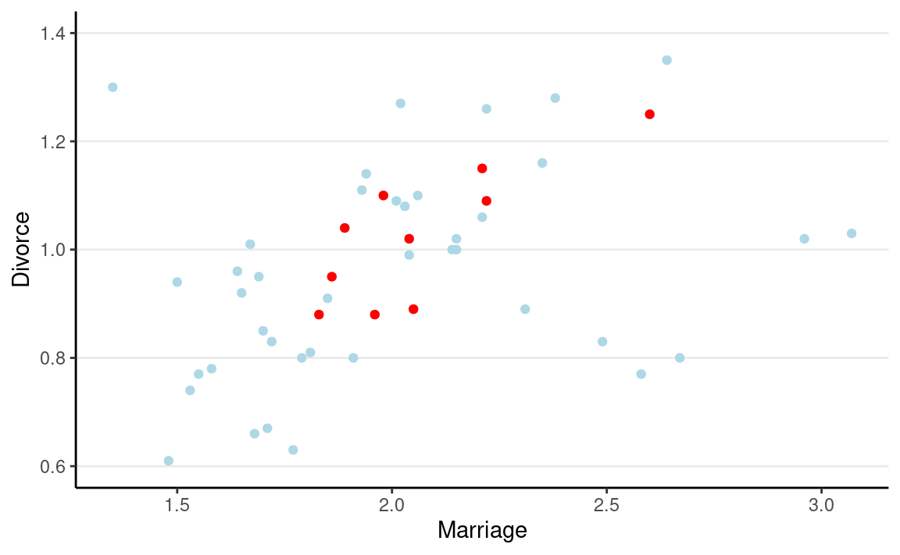
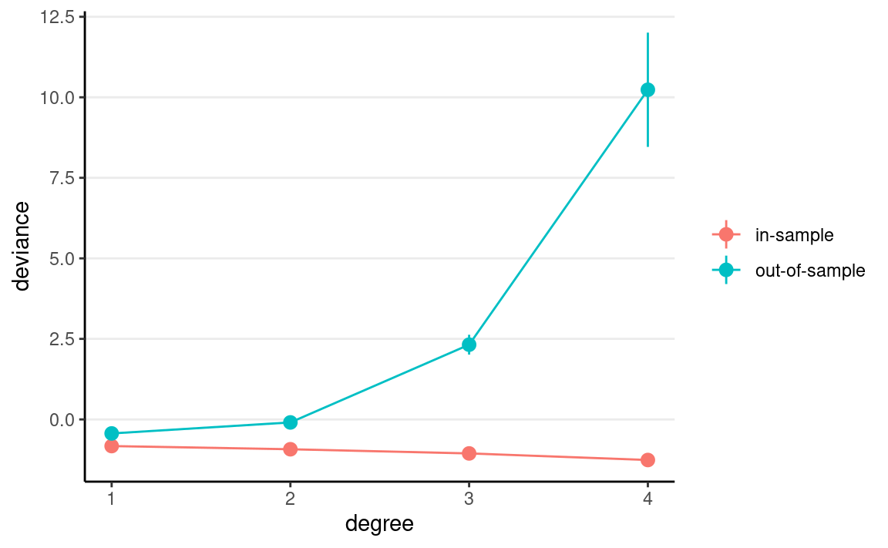

library(tidyverse)
library(here)
library(gridExtra) # for printing multiple ggplots
library(brms) # simplify fitting Stan GLM models
library(posterior) # for summarizing draws
library(modelsummary) # table for brms
theme_set(theme_classic() +
theme(panel.grid.major.y = element_line(color = "grey92")))
In statistical modeling, a more complex model almost always results
in a better fit to the data. Roughly speaking, a more complex model
means a model with more parameters. However, as you will see later,
determining the number of parameters in Bayesian analyses is not
straightforward. On the extreme side, if one has 10 observations, a
model with 10 parameters will perfectly predict every single data point
(by just having a parameter to predict each data point). However, there
are two problems with too complex a model. First, an increasingly
complex model makes it increasingly hard to extract useful information
from the data. Instead of describing the relationship between two
variables, like Marriage and Divorce, by a
straight line, one ends up with a crazy model that is difficult to make
sense of. Second, as you will also see, the more complex a model, the
more is the risk that it overfits the current data, such that
it does not work for future observations.
For example, let’s randomly sample 10 states in the
waffle_divorce data set and build some models.
waffle_divorce <- read_delim( # read delimited files
"https://raw.githubusercontent.com/rmcelreath/rethinking/master/data/WaffleDivorce.csv",
delim = ";"
)
# Rescale Marriage and Divorce by dividing by 10
waffle_divorce$Marriage <- waffle_divorce$Marriage / 10
waffle_divorce$Divorce <- waffle_divorce$Divorce / 10
waffle_divorce$MedianAgeMarriage <- waffle_divorce$MedianAgeMarriage / 10
# Recode `South` to a factor variable
waffle_divorce$South <- factor(waffle_divorce$South,
levels = c(0, 1),
labels = c("non-south", "south")
)
set.seed(1547) # set the seed for reproducibility
# Sample 10 observations
train <- sample.int(nrow(waffle_divorce), 10L)
wd_sub <- waffle_divorce[train, ]
base <- ggplot(aes(x = Marriage, y = Divorce),
data = wd_sub) +
geom_point() +
coord_cartesian(ylim = c(0.6, 1.4)) +
xlim(range(waffle_divorce$Marriage))
ggplot(waffle_divorce,
aes(x = Marriage, y = Divorce)) +
geom_point(col = "lightblue") +
geom_point(size = 1.5, data = wd_sub, col = "red") +
coord_cartesian(ylim = c(0.6, 1.4)) +
xlim(range(waffle_divorce$Marriage))

When using Marriage to predict Divorce, we
can use beyond a linear regression line by using higher-order
polynomials. For example, a second-order polynomial represents
a quadratic effect (with one turning point); it goes to cubic, quartic,
and more. The figure below shows the fit from a linear effect of
Marriage, a quadratic effect, and increasingly complex
models up to a sixth-degree polynomial. As you can see, as the model
gets more complex, the fitted line tries to capture all the 10 points
really well, with an increasing \(R^2\). However, the standard error around
the fitted line also gets larger and bizarre, meaning more uncertainty
in the model parameters.
r2 <- function(object, newresp, newdata) {
# Function for computing R^2
ypred <- predict(object, newdata = newdata)
cor(ypred, newresp)^2
}
rmse <- function(object, newresp, newdata) {
# Function for RMSE
ypred <- predict(object, newdata = newdata)
sqrt(mean((ypred - newresp)^2))
}
# Create six plots through a loop
p_list <- map(1:6, function(i) {
# Use frequentist analyses for speed
mod <- lm(Divorce ~ poly(Marriage, degree = i), data = wd_sub)
base +
geom_smooth(method = "lm", formula = y ~ poly(x, i), level = .80,
fullrange = TRUE) +
annotate("text", x = 1.7, y = 1.4,
label = paste0("italic(R)^2 == ",
round(r2(mod, wd_sub$Divorce), 2)),
parse = TRUE) +
annotate("text", x = 1.7, y = 1.2,
label = paste0("RMSE == ",
round(rmse(mod, wd_sub$Divorce), 2)),
parse = TRUE)
})
do.call(grid.arrange, c(p_list, nrow = 2))
Figure 1: Fit of models on the 10 random cases. Top panel: linear, quadratic, and cubic; bottom panel: 4th, 5th, and 6th degree polynomials
Another way to look at model accuracy is the Root Mean Squared Error (RMSE), defined as the square root of the average squared prediction error. RMSE is a measure of prediction error. The smaller the RMSE, the better the prediction is. As you can see in the above figure, more complex models always reduce the RMSE in the data we use to fit the model (also called training data).
However, if I take the estimated regression line/curve based on the subsample of 10 observations, and predict the remaining cases in the data set, things will be different. As you can see in the figure below, whereas prediction error is comparable for the linear and the quadratic model, polynomials of higher degrees predict the data really badly. When you use a complex model in a data set, it tailors the coefficients to any sampling errors and noise in the data such that it will not generalize to new observations. Therefore, our goal in model comparison is to choose a model complex enough to capture the essence of the data generation process (and thus avoid underfitting), but not too complex such that it suffers from overfitting.
base2 <- ggplot(aes(x = Marriage, y = Divorce),
data = waffle_divorce[-train, ]) +
geom_point() +
coord_cartesian(ylim = c(0.6, 1.4)) +
xlim(range(waffle_divorce$Marriage))
# Create six plots through a loop
p_list2 <- map(1:6, function(i) {
# Use frequentist analyses for speed
mod <- lm(Divorce ~ poly(Marriage, degree = i), data = wd_sub)
# New data and response
test_dat <- waffle_divorce[-train, ]
ynew <- test_dat$Divorce
base2 +
geom_smooth(data = wd_sub, method = "lm", formula = y ~ poly(x, i),
level = .80, fullrange = TRUE) +
annotate("text", x = 1.7, y = 1.4,
label = paste0("italic(R)^2 == ",
round(r2(mod, ynew, test_dat), 2)),
parse = TRUE) +
annotate("text", x = 1.7, y = 1.2,
label = paste0("RMSE == ",
round(rmse(mod, ynew, test_dat), 2)),
parse = TRUE)
})
do.call(grid.arrange, c(p_list2, nrow = 2))
Figure 2: Using the regression lines based on 10 random cases to predict the remaining 40 cases. Top panel: linear, quadratic, and cubic; bottom panel: 4th, 5th, and 6th degree polynomials
The goal of statistical modeling is to choose an optimal model between the overfitting/underfitting dichotomy. In machine learning, this is also commonly referred to as the bias-variance trade-off, as a model that is too simple tends to produce biased predictions because it does not capture the essence of the data generating process. In contrast, a overly complex model is unbiased but results in a lot of uncertainty in the prediction because there are too many unnecessary components that can affect predictions, as indicated in the confidence bands around the 6th-degree polynomial line.
Polynomials of varying degrees are merely one example of comparing simple to complex models. You can think about:
Whereas one can always avoid underfitting by fitting a more and more complex model, we need tools to keep us from overfitting. This lecture is about finding an optimal model that avoids overfitting and avoids underfitting. You will learn to perform model comparisons with information criteria to find a model that has a better balance between overfitting and underfitting.
When comparing models (e.g., linear vs. quadratic), we prefer models closer to the “true” data-generating process. To do so, we need some ways to quantify the degree of “closeness” to the true model. In this context, models comprise both the distributional family and the parameter values. For example, the model \(y_i \sim N(5, 2)\) is a different model than \(y_i \sim N(3, 2)\), which is a different model than \(y_i \sim \mathrm{Gamma}(2, 2)\). The first two have the same family but different parameter values (different means, same \(\mathit{SD}\)). In contrast, the last two have different distributional families (Normal vs. Gamma).
To measure the degree of “closeness” between two models, \(M_0\) and \(M_1\), by far the most popular metric in statistics is the Kullback-Liebler Divergence (or Kullback-Liebler discrepancy; \(D_\textrm{KL}\)). By definition,
\[\begin{align*} D_\textrm{KL}(M_0 \mid M_1) & = \int_{-\infty}^\infty p_{M_0} (\boldsymbol{\mathbf{y}}) \log \frac{p_{M_0}(\boldsymbol{\mathbf{y}})}{p_{M_1}(\boldsymbol{\mathbf{y}})} \; \mathrm{d}\boldsymbol{\mathbf{y}} \\ & = \int_{-\infty}^\infty p_{M_0} (\boldsymbol{\mathbf{y}}) \log p_{M_0}(\boldsymbol{\mathbf{y}}) \; \mathrm{d}\boldsymbol{\mathbf{y}} - \int_{-\infty}^\infty p_{M_0} (\boldsymbol{\mathbf{y}}) \log p_{M_1}(\boldsymbol{\mathbf{y}}) \; \mathrm{d}\boldsymbol{\mathbf{y}}. \end{align*}\]
Note that strictly speaking, \(D_\textrm{KL}\) cannot be called a “distance” between two models because in general, \(D_\textrm{KL}(M_0 | M_1) \neq D_\textrm{KL}(M_1 | M_0)\). As an example, assume that the data are generated by a true model \(M_0\), and we have two candidate models \(M_1\) and \(M_2\), where
ggplot(data.frame(x = c(-3, 9)), aes(x = x)) +
stat_function(fun = dnorm, args = list(mean = 3, sd = 2),
aes(col = "M0"), linetype = 1) +
stat_function(fun = dnorm, args = list(mean = 3.5, sd = 2.5),
aes(col = "M1"), linetype = 2) +
stat_function(fun = dcauchy, args = list(location = 3, scale = 2),
aes(col = "M2"), linetype = 2) +
scale_color_manual(values = c("black", "red", "blue"),
labels = c("M0", "M1", "M2")) +
labs(x = "y", y = "density", col = NULL)
Figure 3: Density for \(M_0\), \(M_1\), and \(M_2\)
One can compute that \(D_\textrm{KL}(M_0 \mid M_1) = 0.0631436\) and \(D_\textrm{KL}(M_0 \mid M_1) = 0.2592445\), and so \(M_1\) is a better model than \(M_2\).
Note that in the expression of \(D_\textrm{KL}\), when talking about the same target model, the first term is always the same and describes the “true” model, \(M_0\). Therefore, it is sufficient to compare models on the second term, \(\int_{-\infty}^\infty p_{M_0} (\boldsymbol{\mathbf{y}}) \log p_{M_1}(\boldsymbol{\mathbf{y}}) \; \mathrm{d}\boldsymbol{\mathbf{y}}\), which can also be written as \(\mathrm{E}=[\log p_{M_1} (\boldsymbol{\mathbf{y}})]\), i.e., the expected log predictive density (elpd). In other words, a model with a larger elpd is preferred over a model with a smaller elpd.
However, we don’t know what \(M_0\) is in real data analysis. If we knew, then we would just need to choose \(M_0\) as our model, and there will be no need for model comparisons. In addition, even if we know that the true model is, e.g., a normal model (which never happens in real data analysis), we still need to estimate the parameter values, and the estimates will not be exactly the same as the true parameter values. However, elpd is defined as the expected value over the true predictive distribution, \(p_{M_0}(y)\), which cannot be obtained without knowing what \(M_0\) is.
So instead, we need to estimate the elpd. A naive way to estimate it is to use the data distribution in place of the true model, but that will lead to an overly optimistic estimate as the sample data are noisy. Computing elpd this way will always favor a more complex model. The ideal way is to collect data on a new, independent sample that share the same data generating process as the current sample, and estimate elpd on the new sample. This is called out-of-sample validation. The problem, of course, is that we usually do not have the resources to collect a new sample.
Therefore, statisticians have worked hard to find ways to estimate elpd from the current sample, and there are two broad approaches:
Without going too deep into the underlying math, it can be shown that a good estimate of elpd is
\[\sum_{i = 1}^n \log p_{M_1}(y_i) - p,\]
where \(p\) is some measure of the number of parameters in \(M_1\). The first term is the likelihood of the model in the current sample. The second term is an adjustment factor so that the quantity above represents the average likelihood of the model in a new sample. It is more common to work with deviance by multiplying the log-likelihood by \(-2\), i.e.,
\[D = -2 \sum_{i = 1}^n \log p_{M_1}(y_i).\]
Now, let’s check the in-sample deviance and out-of-sample deviance of
our waffle_divorce data with different polynomial
functions. Here is a sample function for computing elpd (with
frequentist, just for speed) for polynomials of different degrees:
# Function for computing deviance with different polynomial
deviance_divorce <- function(degree = 1,
train = 10,
y = waffle_divorce$Divorce,
x = waffle_divorce$Marriage) {
N <- length(y)
# get training sample
if (length(train) == 1) {
train <- sample.int(N, train)
}
ntrain <- length(train)
# Obtain design matrix
X <- cbind(1, poly(x, degree, simple = TRUE))
# Get elpd for training sample
Xtrain <- X[train, ]
ytrain <- y[train]
betahat <- qr.solve(Xtrain, ytrain) # estimated betas
res_train <- ytrain - Xtrain %*% betahat
sigmahat <- sqrt(sum(res_train^2) /
(ntrain - 1 - degree)) # estimated sigma
deviance_train <- -2 * sum(dnorm(res_train, sd = sigmahat, log = TRUE))
res_test <- y[-train] - X[-train, ] %*% betahat
deviance_test <- -2 * sum(dnorm(res_test, sd = sigmahat, log = TRUE))
tibble(degree = degree,
sample = c("in-sample", "out-of-sample"),
deviance = c(deviance_train / ntrain,
deviance_test / (N - ntrain))
)
}
Below shows the in-sample and out-of-sample elpd for the linear model:
deviance_divorce(degree = 1, train = train)
#> # A tibble: 2 × 3
#> degree sample deviance
#> <dbl> <chr> <dbl>
#> 1 1 in-sample -2.38
#> 2 1 out-of-sample 3.79And for quadratic:
deviance_divorce(degree = 2, train = train)
#> # A tibble: 2 × 3
#> degree sample deviance
#> <dbl> <chr> <dbl>
#> 1 2 in-sample -2.34
#> 2 2 out-of-sample 3.05In general, as you can see, the deviance is smaller for the current data than for the hold-out data. Note that because the training and testing data sets have different sizes, I divided the deviance by the sample size so that they can be compared.
Now let’s run an experiment to check the elpd with different degrees polynomial, with a training sample size of 60:
set.seed(1733)
# Use the `map` function to run different polynomials, and use the `rerun`
# function run the deviance 100 times. The code below runs `deviance_divorce` by
# randomly sampling 25 training samples 100 times, and compute the in-sample
# and out-of-sample deviance for each.
# rerun(100, deviance_divorce(degree = 1, train = 25L)) %>%
# bind_rows()
# Now run 1 to 4 degree polynomial, each 1000 times:
dev_df <- map_df(1:4,
~ rerun(1000, deviance_divorce(degree = .x, train = 25L)) %>%
bind_rows)
# Plot the results
dev_df %>%
ggplot(aes(x = degree, y = deviance, col = sample)) +
stat_summary() +
stat_summary(geom = "line") +
labs(col = NULL)

As you can see, the in-sample deviance (red line) keeps decreasing, indicating that a more complex model fits the data better, which is always the case. So if one were to use deviance to determine what model is optimal, one would always choose the most complex model, just like using \(R^2\) (indeed, for linear models, deviance is basically the same as \(R^2\)).
Now, look at the blue line, which represents the deviance computed using the coefficients obtained from the training set but applied to the remaining data. As you can see, the deviance achieves its minimum around the linear and the quadratic model, and starts to increase, meaning that the more complex models do not fit the hold-out data.
A statistical model is used to learn something from a data set that can generalize to other observations. Therefore, we should care about the blue line, instead of the red one. The indices you will see in the remaining of this note are all attempts to approximate the blue line.
More complex models always fit the current data better, but may not generalize to other data. In other words, models that are too complex are not generalizable.
We will illustrate the computation of information criteria with
Marriage predicting Divorce:
Multiplying the quantity of elpd - \(p\) by \(-2\), or deviance + 2\(p\), with the deviance obtained using the maximum likelihood estimates (MLEs) for the parameters, gives you the formula for AIC:
\[\textrm{AIC} = D(\hat \theta) + 2p,\]
and \(p\) in AIC is just the number of parameters. As we have multiplied by a negative number, maximizing the estimate of elpd is equivalent to minimizing the AIC, so one would prefer a model with the smallest AIC.
The AIC is not Bayesian because it only uses point estimates (MLEs) of parameters rather than their posterior distributions. Also, it does not take into account any prior information.
The definition of AIC assumes that the parameter estimates are known or are maximum likelihood estimates. The DIC, instead, replaces those with the posterior distribution of the parameters. The general formula for DIC is
\[\textrm{DIC} = \mathrm{E}(D \mid \boldsymbol{\mathbf{y}}) + 2 p_D,\]
where \(p_D\) is the effective number of parameters estimated in the Markov chain. Although DIC does take into account the prior distributions, it does not consider the full posterior distributions of the parameters.
# Function to compute DIC
dic_brmsfit <- function(object) {
Dbar <- -2 * mean(rowSums(log_lik(object)))
res <- residuals(object)[ , "Estimate"]
sigma <- posterior_summary(object, variable = "sigma")[ , "Estimate"]
Dhat <- -2 * sum(dnorm(res, sd = sigma, log = TRUE))
p <- Dbar - Dhat
elpd <- Dhat / -2 - p
data.frame(elpd_dic = elpd, p_dic = p, dic = Dhat + 2 * p,
row.names = "Estimate")
}
dic_brmsfit(m1)
#> elpd_dic p_dic dic
#> Estimate 15.45456 2.93061 -30.90913A further modification is to use the log pointwise posterior predictive density, with the effective number of parameters computed using the posterior variance of the likelihood.
\[\textrm{WAIC} = -2 \sum_{i = 1}^n \log \mathrm{E}[p(y_i \mid \boldsymbol{\mathbf{\theta}}, \boldsymbol{\mathbf{y}})] + 2 p_\textrm{WAIC},\]
where \(\mathrm{E}[p(y_i \mid \boldsymbol{\mathbf{\theta}}, \boldsymbol{\mathbf{y}})]\) is the posterior mean of the likelihood of the \(i\)th observation. The WAIC incorporates prior information, and the use of pointwise likelihood makes it more robust when the posterior distributions deviate from normality. In general, WAIC is a better estimate of the out-of-sample deviance than AIC and DIC.
waic(m1) # built-in function in brms
#>
#> Computed from 8000 by 50 log-likelihood matrix
#>
#> Estimate SE
#> elpd_waic 15.1 5.0
#> p_waic 3.3 1.0
#> waic -30.3 9.9
#>
#> 1 (2.0%) p_waic estimates greater than 0.4. We recommend trying loo instead.The idea of cross-validation is to split the sample so that it
imitates the scenario of estimating the parameters in part of the data
and predicting the remaining part. The part used for estimation is
called the training set, and the part used for prediction is
called the validation set. Leave-one-out information criteria
(LOO-IC) means that one uses \(N - 1\)
observations as the training set and 1 observation as the validation
sample and repeat the process \(N\)
times so that a different observation is being predicted each time.
Adding up the prediction results will give an estimate of elpd that
closely approximates the results that would be obtained by collecting
new data and doing the validation. To make it more concrete, we can go
back to the waffle_divorce data with Marriage
predicting Divorce. We can do this for case #1 (Alabama),
as an example:
# Estimate the model without case #1
m1_no1 <- update(m1, newdata = waffle_divorce[-1, ])
#> [1] -0.8146703Because LOO-IC requires fitting the model \(N\) times, it is generally very
computationally intensive. There are, however, shortcuts for some models
to make the computation faster. WAIC can also be treated as a fast
approximation of LOO-IC, although LOO-IC is more robust and will be a
better estimate of out-of-sample deviance. The loo package
uses the so-called Pareto smoothed importance sampling (PSIS) to
approximate LOO-IC without repeating the process \(N\) times.
Here is the LOO-IC for the model:
loo(m1)
#>
#> Computed from 8000 by 50 log-likelihood matrix
#>
#> Estimate SE
#> elpd_loo 15.1 5.0
#> p_loo 3.3 1.0
#> looic -30.2 10.0
#> ------
#> Monte Carlo SE of elpd_loo is 0.0.
#>
#> All Pareto k estimates are good (k < 0.5).
#> See help('pareto-k-diagnostic') for details.You can save the WAIC and the LOO-IC information to the fitted result:
m1 <- add_criterion(m1, c("loo", "waic"))
See Vehtari et al. (2016) for more discussions on WAIC and LOO-IC.
Consider four potential models in predicting
Divorce:
\[\texttt{Divorce}_i \sim N(\mu_i, \sigma)\]
MarriageMarriage, South, Marriage
\(\times\) SouthSouth, smoothing spline of Marriage by
SouthMarriage, South,
MedianAgeMarriage, Marriage \(\times\) South,
Marriage \(\times\)
MedianAgeMarriage, South \(\times\) MedianAgeMarriage,
Marriage \(\times\)
South \(\times\)
MedianAgeMarriage# Note, m1 has been fit before; the `update()` function
# can be used to simply change the formula, and brms will
# determine whether it needs re-compiling.
# M2: Add South and interaction
m2 <- update(m1, formula = Divorce ~ Marriage * South,
newdata = waffle_divorce)
m2 <- add_criterion(m2, c("loo", "waic"))
# M3: Spline function for Marriage
m3 <- update(m1, formula = Divorce ~ South + s(Marriage, by = South),
newdata = waffle_divorce,
control = list(adapt_delta = .999))
m3 <- add_criterion(m3, c("loo", "waic"))
# M4: Three-way interactions
m4 <- update(m1, formula = Divorce ~ Marriage * MedianAgeMarriage * South,
newdata = waffle_divorce,
control = list(max_treedepth = 12)) # increase due to warning
m4 <- add_criterion(m4, c("loo", "waic"))
The first model only has Marriage as a predictor, which
means that the coefficients for South and
MedianAgeMarriage are assumed to be zero. The second model
added South and its interaction with Marriage
as a predictor. The third model includes a smoothing spline term (a
flexible non-linear function, within the class of linear models),
whereas the fourth model also includes MedianAgeMarriage
and all two-way and three-way interactions. Now, we can compare the four
models:
loo_compare(m1, m2, m3, m4)
#> elpd_diff se_diff
#> m4 0.0 0.0
#> m2 -5.4 4.0
#> m3 -5.9 4.0
#> m1 -8.7 4.2# m4 is the best
msummary(list(M1 = m1, M2 = m2, M3 = m3, M4 = m4),
estimate = "{estimate} [{conf.low}, {conf.high}]",
statistic = NULL, fmt = 2)
| M1 | M2 | M3 | M4 | |
|---|---|---|---|---|
| b_Intercept | 0.61 [0.34, 0.88] | 0.67 [0.42, 0.92] | 0.94 [0.89, 0.99] | 5.54 [1.70, 9.20] |
| b_Marriage | 0.18 [0.05, 0.31] | 0.13 [0.01, 0.25] | −1.21 [−2.98, 0.48] | |
| sigma | 0.17 [0.14, 0.21] | 0.16 [0.13, 0.20] | 0.15 [0.12, 0.19] | 0.14 [0.11, 0.17] |
| b_Southsouth | −0.63 [−1.47, 0.22] | 0.10 [−0.02, 0.22] | 0.35 [−2.94, 3.62] | |
| b_Marriage × Southsouth | 0.37 [−0.05, 0.77] | 0.51 [−1.67, 2.66] | ||
| bs_sMarriage × SouthnonMsouth_1 | −0.46 [−3.35, 1.46] | |||
| bs_sMarriage × Southsouth_1 | 1.24 [−1.96, 3.63] | |||
| sds_sMarriageSouthnonMsouth_1 | 0.86 [0.00, 2.22] | |||
| sds_sMarriageSouthsouth_1 | 0.49 [0.00, 2.05] | |||
| b_MedianAgeMarriage | −1.73 [−3.11, −0.27] | |||
| b_Marriage × MedianAgeMarriage | 0.45 [−0.21, 1.14] | |||
| b_MedianAgeMarriage × Southsouth | −0.36 [−1.60, 0.93] | |||
| b_Marriage × MedianAgeMarriage × Southsouth | −0.08 [−1.04, 0.89] | |||
| Num.Obs. | 50 | 50 | 50 | 50 |
| ELPD | 15.1 | 18.3 | 17.8 | 23.7 |
| ELPD s.e. | 5.0 | 5.5 | 5.6 | 6.0 |
| LOOIC | −30.2 | −36.7 | −35.6 | −47.5 |
| LOOIC s.e. | 10.0 | 11.0 | 11.3 | 12.0 |
| WAIC | −30.3 | −36.9 | −36.9 | −48.1 |
| RMSE | 0.17 | 0.15 | 0.14 | 0.13 |
Model 4 has the lowest LOO-IC, so one may conclude that Model 4 is the best model among the four, for prediction purposes.
#> [1] "April 13, 2022"If you see mistakes or want to suggest changes, please create an issue on the source repository.
Text and figures are licensed under Creative Commons Attribution CC BY-NC-SA 4.0. Source code is available at https://github.com/marklhc/20221-psyc573-usc, unless otherwise noted. The figures that have been reused from other sources don't fall under this license and can be recognized by a note in their caption: "Figure from ...".